The Shape
of Movement
My photographs begin with physical actions. I use movement, gesture, and the body to explore experiences that are often difficult to describe. Through long exposures, photographic experimentation, and digital processes, recognizable forms become blurred, fragmented, or transformed.
These images move between representation and abstraction. Gesture can suggest tension, vulnerability, uncertainty, or release without settling into a single meaning. Movement is both the subject of the work and a means of making it.
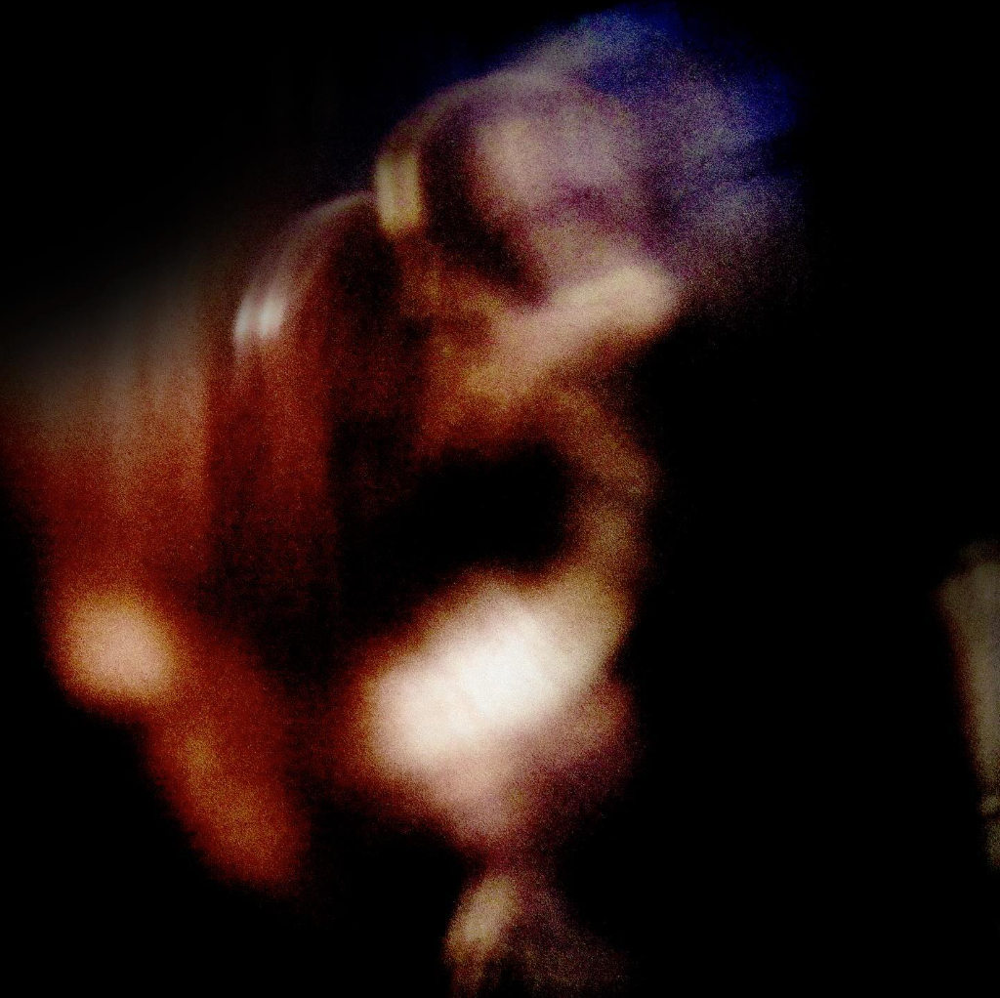
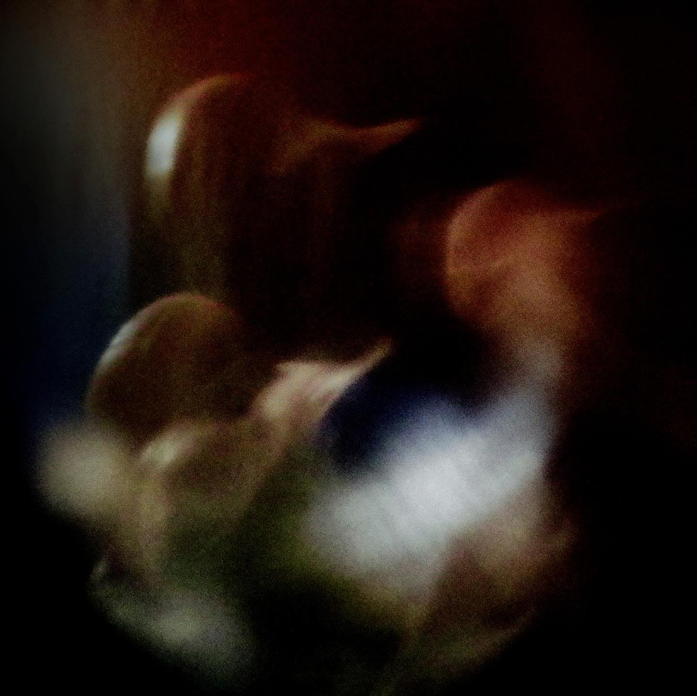
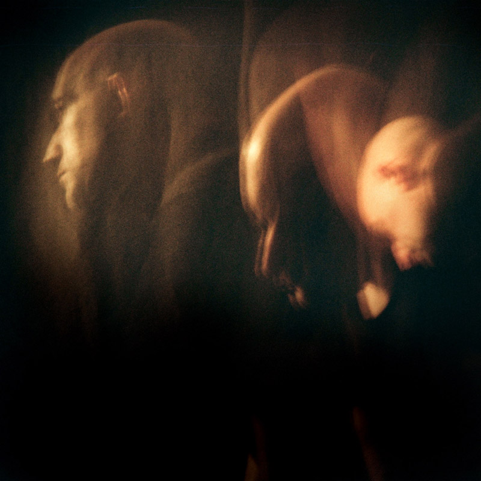
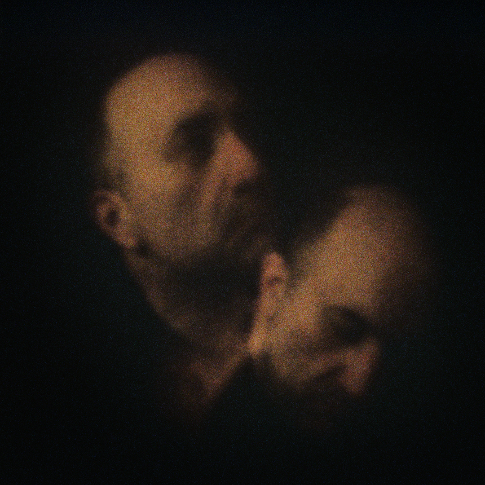
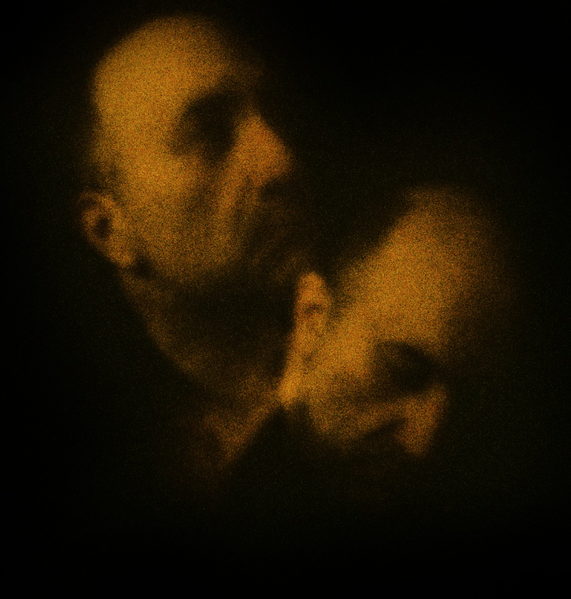
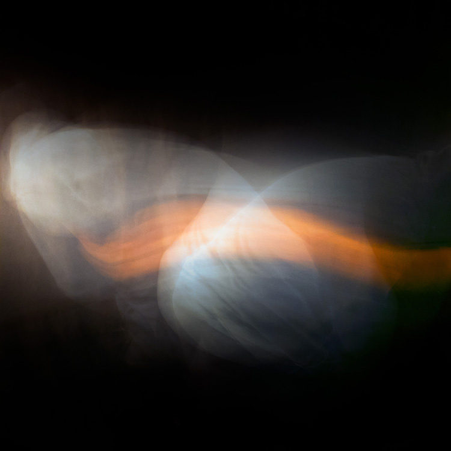

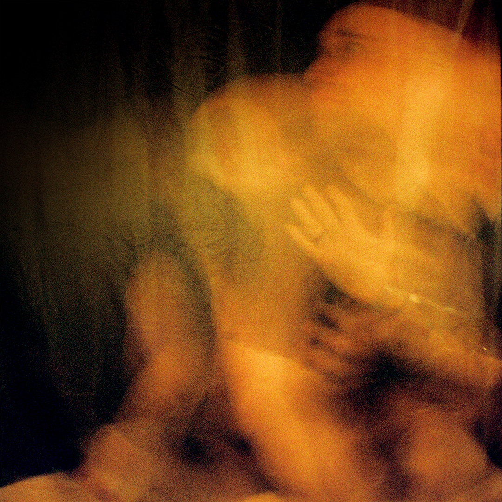
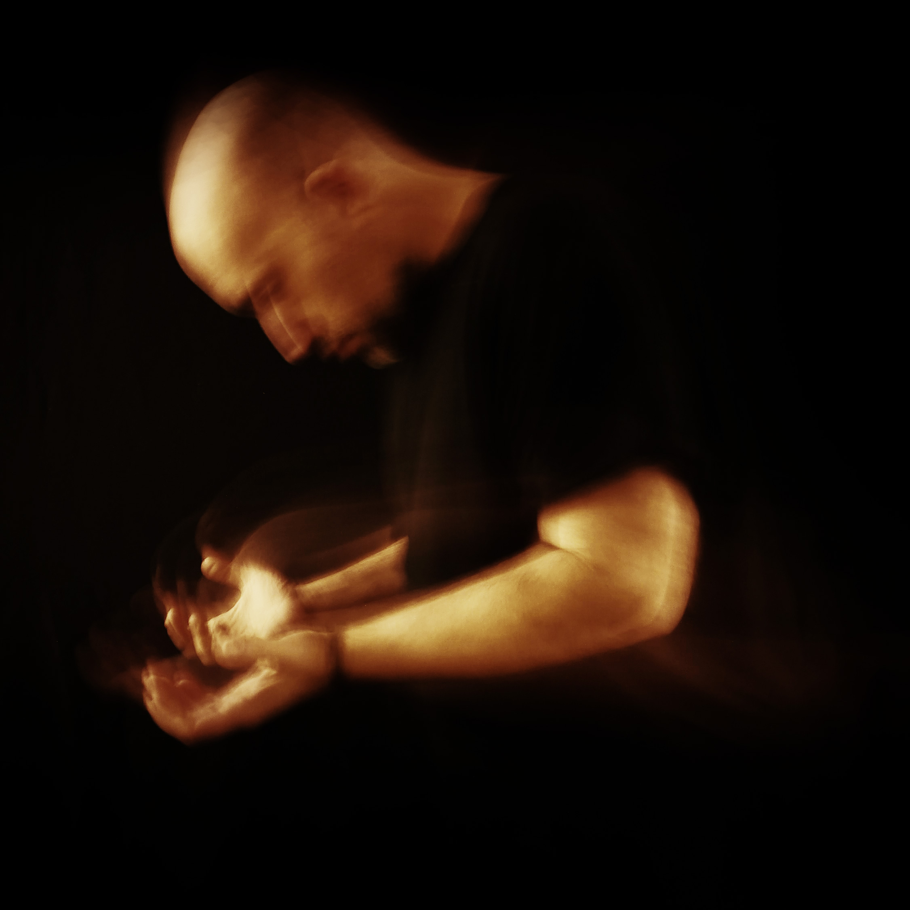
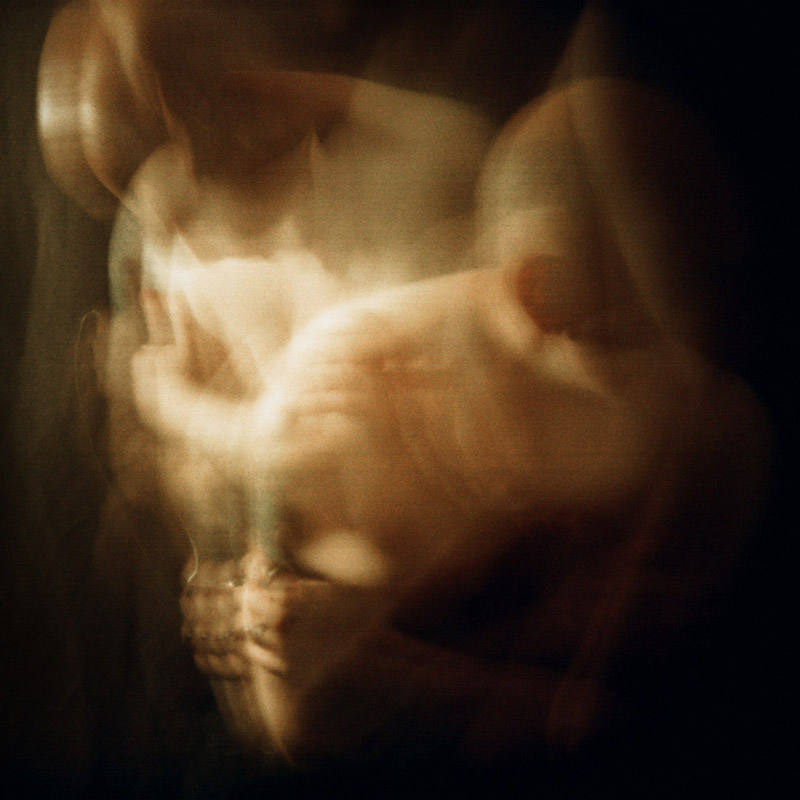
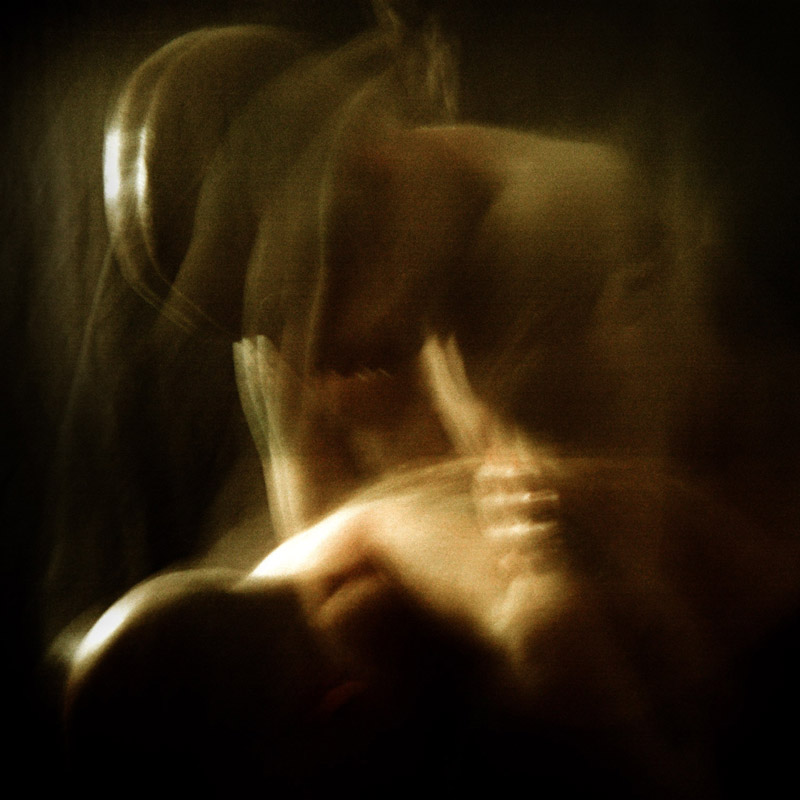
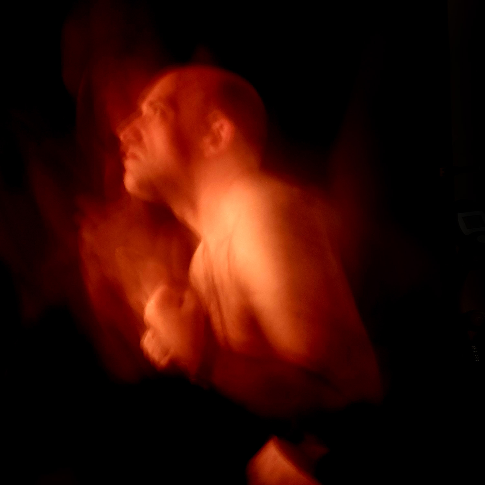

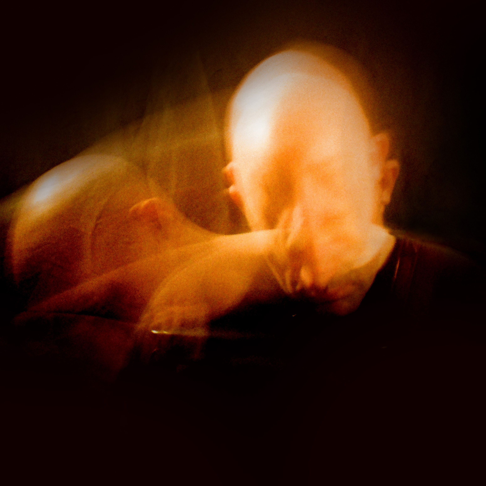

Nicholas D’Angelo
Nicholas D’Angelo is an artist and photographer whose work explores physical movement and psychological experience. Working with photography, performance, and digital processes, he transforms fleeting gestures into images between representation and abstraction.